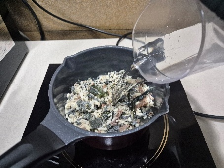
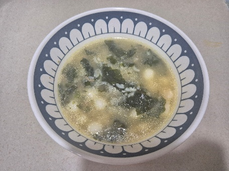
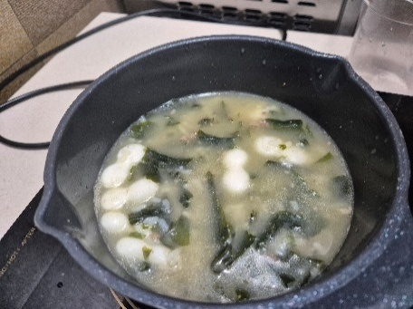
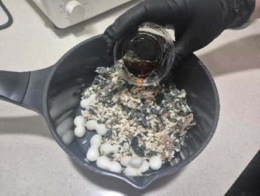

| 메뉴명 | 든든한끼 미역떡국밥 |
|---|---|
| 판매가격 | 5,900원 |
| 원재료 | 미역국밥, 조랭이떡, 우동장국 |
| 사용 부자재 | 라면용기 |
| 메뉴특징 | 뜨끈한 미역국에 쫄깃한 조랭이떡을 더해, 속까지 든든하게 채워주는 한 그릇 |
※ 제조 후 최대한 빨리 제공할 것.
※ 냉동 조랭이떡은 비닐에 감싸 전자레인지에 20초간 돌려준다.
※ 라면조리기 설정법은 아래 링크에서 확인하세요.
🍜 라면조리기

1
냄비에 미역국밥 1팩, 냉장 조랭이떡 10개, 우동장국 4g을 넣어준다.
냄비에 미역국밥 1팩, 냉장 조랭이떡 10개, 우동장국 4g을 넣어준다.
2
라면조리기 [미역국] 모드 선택 후 [시작/정지] 버튼을 눌러 조리를 시작한다.
라면조리기 [미역국] 모드 선택 후 [시작/정지] 버튼을 눌러 조리를 시작한다.

3
조리가 완료되면 라면용기에 옮겨 담아준다.
조리가 완료되면 라면용기에 옮겨 담아준다.
🔥 인덕션
1
냄비에 미역국밥 1팩, 냉장 조랭이떡 10개, 우동장국 4g을 넣어준다.
냄비에 미역국밥 1팩, 냉장 조랭이떡 10개, 우동장국 4g을 넣어준다.

2
물 400g을 넣고 인덕션 6번에서 5분간 끓여준다.
물 400g을 넣고 인덕션 6번에서 5분간 끓여준다.

3
중간중간 잘 섞어가며 끓여주고 완성되면 라면용기에 옮겨 담아준다.
중간중간 잘 섞어가며 끓여주고 완성되면 라면용기에 옮겨 담아준다.